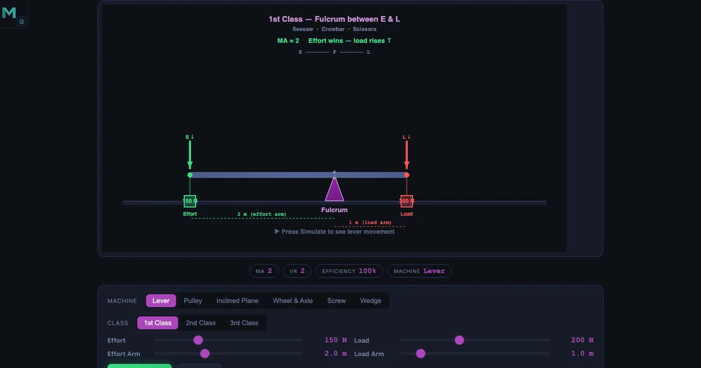
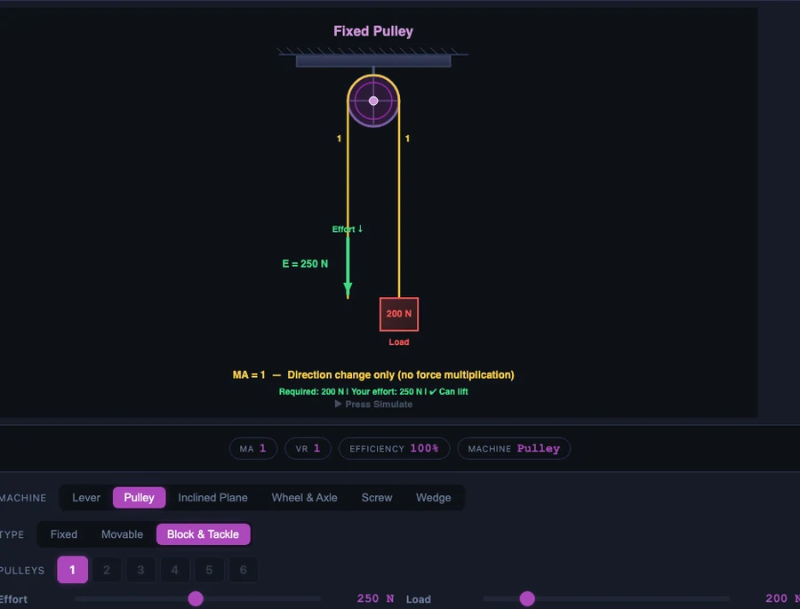

Simple Machines Simulator — Mechanical Advantage, Velocity Ratio, and Efficiency Explained

- Mechanical advantage (MA) is how much a machine multiplies your force: MA = Load / Effort, so an MA of 3 lets 133 N of effort lift a 400 N load.
- Velocity ratio (VR) is the ideal force multiplication set purely by geometry (effort distance / load distance), and efficiency = (MA / VR) × 100% is always below 100% because of friction.
- Among the six simple machines, the screw gives the highest MA (MA = 2πL / p ≈ 471 for a 300 mm handle and 4 mm pitch), while inclined planes and levers are the most efficient (95–100%).
Every crane, every car jack, every bicycle gear, every door hinge — they are all refinements of six machines that humans figured out before recorded history. Lever, pulley, inclined plane, wheel and axle, screw, wedge. Call them simple machines and first-year students roll their eyes. They have covered this. Then ask one of them to explain why a screw jack can lift a car with one hand, or why a block-and-tackle doesn’t give you something for nothing, and the room gets quiet.
The numbers are where the understanding lives. A Simple Machines simulator makes those numbers immediate: change the lever arm, watch mechanical advantage update. Switch to a pulley, count the rope sections, see why MA equals that count. The gap between “I know what a lever is” and “I can calculate what any lever will do” closes faster with live feedback than with any amount of worked examples on a whiteboard.
Why Simple Machines Still Matter — Even in a CNC World
Students sometimes ask whether any of this is relevant now that CNC machines and servo motors do the heavy work. Here’s the thing: every powered machine is still built from these primitives. The lead screw in that CNC machine is literally a screw, converting rotary motor torque into linear cutting force via mechanical advantage. The rack and pinion on the axis drive is a wheel-and-axle variant. The servo amplifier decides how much torque to apply; the simple machine determines what that torque actually achieves at the tool.
Mechanical advantage is also the first place students encounter the engineering trade-off between force and distance. You can multiply force. You cannot get more energy out than you put in. Something always moves further to compensate. That conservation principle — output work equals input work in an ideal machine — is the foundation for understanding gear ratios, hydraulic systems, and electrical transformers. All of it is the same idea wearing different clothes.
There is a practical reason too. Maintenance engineers diagnose machine faults every day by reasoning about MA, VR, and efficiency. A worm gear drive that is running hotter than expected? The efficiency has dropped. Calculate what it should be, measure what it is, and you have a quantitative handle on the wear or misalignment causing the problem. Simple machines are the vocabulary of mechanical troubleshooting.
The Three Numbers That Define Every Machine — MA, VR, and Efficiency
Mechanical advantage, velocity ratio, and efficiency are three ways of looking at the same underlying energy exchange. Get comfortable with all three before touching a single tool type.
Mechanical advantage (MA) is the ratio of the force the machine produces (load) to the force you apply (effort):
\[\text{MA} = \dfrac{\text{Load}}{\text{Effort}}\]
An MA of 3 means you push with 133 N and lift 400 N. The machine is multiplying your force by 3. An MA less than 1 means you are sacrificing force to gain speed or distance — a bicycle in high gear does this intentionally.
Velocity ratio (VR) is the theoretical force multiplication of a perfect, frictionless version of the same machine — the ratio of how far the effort moves to how far the load moves:
\[\text{VR} = \dfrac{\text{effort distance}}{\text{load distance}}\]
VR is fixed by geometry. You can calculate it from dimensions without ever running the machine. In an ideal machine, MA equals VR exactly. In the real world, friction always reduces MA below VR.
Efficiency (\(\eta\)) is the ratio of what you get to what you put in:
\[\eta = \dfrac{\text{MA}}{\text{VR}} \times 100\%\]
A well-lubricated inclined plane might hit 97%. A rusty screw jack might manage 25%. The difference is all friction. No machine ever reaches 100% in practice because friction converts some input work to heat rather than useful output work.
The Six Simple Machines — How Each Multiplies Force
Lever
The lever is the most intuitive of the six. A rigid beam pivots about a fixed point (the fulcrum). Effort applied on one side lifts a load on the other. MA depends entirely on where the fulcrum sits relative to the effort and the load:
\[\text{MA} = \dfrac{\text{effort arm}}{\text{load arm}}\]
In the hero image above, the effort arm is 3 m and the load arm is 1 m. MA = 3. A 400 N load needs only 400 / 3 = 133.3 N of effort. VR equals MA for an ideal lever, so efficiency is 100% in theory — levers are about as close to frictionless as simple machines get.
There are three lever classes. Class 1 (crowbar, scissors) puts the fulcrum between effort and load. Class 2 (wheelbarrow, nutcracker) puts the load between fulcrum and effort — MA is always greater than 1, sometimes reaching 4 or more. Class 3 (tweezers, fishing rod) puts the effort between fulcrum and load — MA is less than 1, trading force for speed and range of motion. The simulator lets you switch between all three and watch MA change as you drag the fulcrum position.
Pulley
A single fixed pulley changes the direction of effort but gives no mechanical advantage — MA = 1. The value comes when you add moving pulleys. In a block-and-tackle arrangement, MA equals the number of rope sections supporting the moving block:
\[\text{MA} = \text{VR} = n \quad \text{(number of supporting rope sections)}\]
Four rope sections give MA = 4. That means 200 N of effort lifts an 800 N load. Efficiency in real pulleys is typically 85–95% because of friction in the sheave bearings. A pulley system with MA = 4 but \(\eta\) = 90% requires effort = 800 / (4 × 0.9) = 222 N rather than the ideal 200 N.
Inclined Plane
Rolling or sliding a load up a ramp rather than lifting it straight up. The longer and shallower the ramp, the less effort is needed. MA is the reciprocal of the sine of the slope angle:
\[\text{MA} = \dfrac{1}{\sin\theta} = \dfrac{L}{h}\]
At \(\theta\) = 30°, MA = 2. A 500 N load needs only 250 N of effort along the ramp — half the effort, but you push over twice the distance. VR = L/h = 2 as well. Inclined planes are among the most efficient simple machines; on a smooth, well-maintained ramp \(\eta\) can exceed 95%.
Wheel and Axle
A large wheel and a small axle share the same rotational axis. Effort at the rim of the wheel moves a much larger circle than the load moves at the axle, so MA is the ratio of radii:
\[\text{MA} = \dfrac{R}{r}\]
A steering wheel with R = 0.20 m and axle radius r = 0.04 m gives MA = 5. A relatively small force at the rim turns the steering column with five times the torque. Screwdrivers, winches, and door handles all use the same principle — the wider the handle, the higher the MA.
Screw
A screw is an inclined plane wrapped helically around a cylinder. Each full turn of the handle advances the screw by one pitch (the distance between threads). The MA is enormous because the effort travels a large circular path while the load advances a tiny distance:
\[\text{MA} = \dfrac{2\pi L}{p}\]
With a handle length L = 300 mm and pitch p = 4 mm, MA = 2π × 300 / 4 = 471.2. A hand force of 50 N at the handle produces 50 × 471 = 23,550 N of clamping or lifting thrust. That is how a C-clamp crushes a workpiece from finger pressure, and how a screw jack lifts a car. The trade-off is that the load moves 4 mm per full turn — progress is slow and efficiency is typically 20–50% because thread friction is very high.
Wedge
A wedge converts a pushing force along its axis into a splitting or lifting force perpendicular to its faces. MA depends on how long and thin the wedge is:
\[\text{MA} = \dfrac{L}{t}\]
A wedge 200 mm long and 20 mm thick at its base gives MA = 10. The narrower the angle, the higher the mechanical advantage — and the more strokes required to drive it in. Axes, chisels, knives, and door stops are all wedges. Unlike the other simple machines, wedges also change the direction of force, which is why a sharp blow downward from an axe produces an outward splitting force in the wood grain.

Compound Machines — Multiplying the Advantage
When two or more simple machines are connected in series, their mechanical advantages multiply. That is not an approximation — it is exact (for ideal machines) and very nearly true for real ones when efficiency losses are small.
\[\text{MA}_{\text{total}} = \text{MA}_1 \times \text{MA}_2\]
Connect a lever with MA = 3 to a pulley system with MA = 4, and the compound MA = 12. That single chain converts 33 N of hand effort into 400 N at the lever, then 400 N into 1,600 N lifted load. Cranes do exactly this, stacking gear drives, wire ropes, and pulley blocks to achieve overall mechanical advantages in the hundreds or thousands.
Real compound machines pay an efficiency tax at each stage. If the lever is 98% efficient and the pulley is 90% efficient, the compound efficiency is 0.98 × 0.90 = 88.2%. The more stages you add, the harder it becomes to keep overall efficiency respectable. This is why machine designers always ask: can I get the required MA with fewer stages? The simulator lets you set individual MAs for two machines and read the compound product directly — a fast way to build intuition about how quickly losses compound.
A Classroom Activity That Always Works
I use this with first-semester students who have been told about simple machines but have never had to predict one’s behaviour from scratch. Open the simulator. Set it to the screw mode. Set handle length to 300 mm and pitch to 4 mm. Ask the class to estimate MA before anyone touches a slider.
Most guesses land between 10 and 50. A few bold ones say 100. Nobody ever says 471. When you plug in the formula — MA = 2π × 300 / 4 = 471 — the room goes quiet in a good way. Then you ask: so what does that mean? If I apply 50 N with my hand, what force comes out? 50 × 471 = 23,550 N. That is about 2.4 tonnes of thrust from a single hand. Now the screw jack that lifts a car makes sense for the first time. The formula was always there; the simulator makes the implication unavoidable.
The follow-up question seals it: if MA is 471, why doesn’t everyone use screws for everything? Because you need 471 turns to move the load the same distance you moved the handle. And efficiency is 20–50% because thread friction is brutal. High MA, low speed, low efficiency — that’s the screw’s trade-off, and no machine escapes it.
Try It Yourself
All tools below are free — no account, no download. Open them in any browser and start experimenting.
Key Takeaways
- MA = Load / Effort. A machine with MA > 1 multiplies force at the cost of moving the effort through a longer distance. Energy is always conserved.
- VR = effort distance / load distance. It is set by geometry alone and never changes with friction. Efficiency = (MA / VR) × 100%.
- The screw has the highest MA of any single simple machine: MA = 2πL / p. A 300 mm handle and 4 mm pitch gives MA ≈ 471. This power comes with very low speed and low efficiency.
- Inclined planes and levers are the most efficient simple machines (often 95–100%). Screws are the least efficient (20–50%) because thread friction is unavoidably high.
- Compound machines multiply individual MAs: MA_total = MA₁ × MA₂. Efficiencies multiply too, so each stage reduces overall output.
- Every powered machine — CNC lead screws, crane blocks, car steering — is a combination of these six primitives. Understanding simple machines is understanding how all machines work at their core.
Frequently Asked Questions
What is mechanical advantage and how is it calculated?
Mechanical advantage (MA) is the ratio of output force (load) to input force (effort) — MA = Load / Effort. An MA greater than 1 means the machine multiplies your force. A lever with a 3 m effort arm and a 1 m load arm has MA = 3, meaning 133 N of effort lifts a 400 N load. MA above 1 always comes at the cost of moving the effort through a larger distance than the load moves.
What is the difference between mechanical advantage and velocity ratio?
Mechanical advantage (MA) is the actual force multiplication measured under real conditions including friction. Velocity ratio (VR) is the theoretical ratio of effort distance to load distance — it assumes a perfect, frictionless machine. In practice MA is always less than or equal to VR. Their ratio gives efficiency: η = MA/VR × 100%.
Which simple machine gives the highest mechanical advantage?
The screw gives the highest mechanical advantage of any single simple machine. With a handle length of 300 mm and a pitch of 4 mm, MA = 2π × 300 / 4 ≈ 471. This is why screws and screw jacks can exert enormous clamping or lifting forces from small hand torques — though they move the load very slowly and require many turns.
How does a compound machine increase mechanical advantage?
A compound machine combines two or more simple machines in series, and their mechanical advantages multiply. A lever with MA = 3 connected to a pulley with MA = 4 produces a compound MA = 3 × 4 = 12. Real machines — cranes, car jacks, bicycle gears — are compound machines. The simulator lets you set individual MAs and see the product directly.
Why is no simple machine 100% efficient?
Friction between moving parts always converts some input work into heat. The efficiency η = (MA / VR) × 100% is less than 100% whenever MA < VR, which is always true in practice. Inclined planes have relatively high efficiency (95%+) because surfaces can be smooth; screws are the least efficient (20–50%) because of high thread friction. Lubrication and better materials improve efficiency but cannot eliminate friction entirely.
Simple machines are not a beginner topic you graduate from. They are a framework you keep returning to. Every time you analyse a mechanism — whether it is a manual press, a lifting fixture, or a multi-stage gearbox — you are asking the same three questions: what is MA, what is VR, and where does the efficiency go? The six machines give you the vocabulary. The three formulas give you the calculation. The simulator gives you the feedback loop that turns vocabulary into instinct.
Open the Simple Machines simulator, set the screw parameters to L = 300 mm and p = 4 mm, and watch what MA 471 actually looks like. Then try the compound mode. The numbers stop being abstract very quickly.